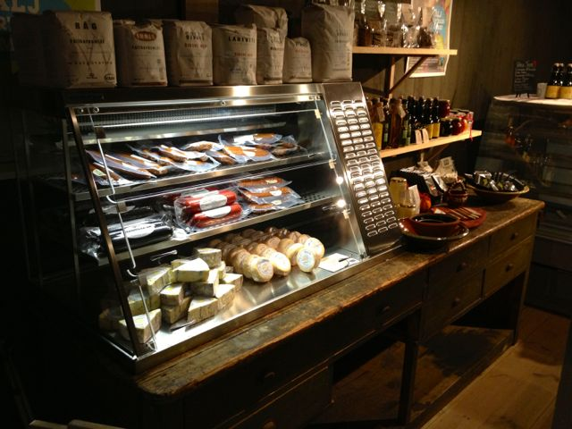
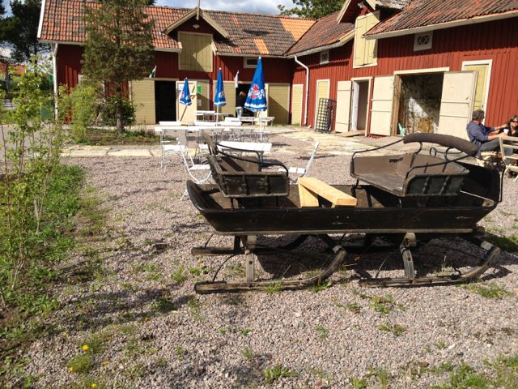
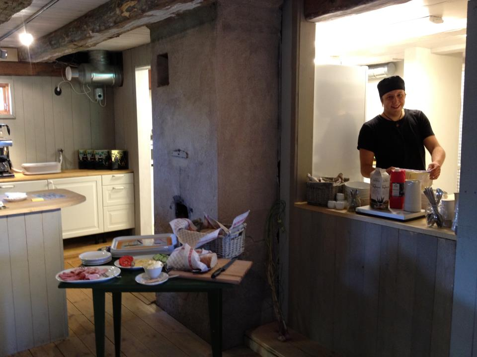

Senaste nytt
Konstrunda
Söndagen den 5:e maj öppnar Törebodas konstnärer sina ateljéer för besökare. Rundan starar på Visthuset och där finns karta och kaffebiljett att köpa.
Gammalt blir nytt!
Den 11 maj arrangeras Sveriges längsta loppis vid Göta Kanal. På Visthuset har vi loppis och antikt samt workshops hela dagen. Ta med dig något hemifrån som du vill göra om, eller hitta kanske något på loppisen som ger dig inspiration. Mer info...
Ung företagsamhet i Töreboda
Visthuset bjuder in till mässa med unga företagare i Töreboda. Kom och låt dig inspireras av ungdomligt engagemang och intressanta föreläsare.

Välkommen till Visthuset!
Vintern 2010 påbörjades arbetet med att rusta en av Törebodas äldsta byggnader. Femtio år hade gått sedan den siste slaktaren i raden av tre lade ner sin verksamhet på platsen. Under åren som följde var det ingen som sörjde för byggnadens omvårdnad och dess skick blev med tiden allt mer nedgånget. Röster höjdes för att riva stället och så var det också nära att det blev. Men av någon anledning sparades huset och användes under tio år delvis som förråd och garage. Under tiden som vi har arbetat med att rusta upp huset har vi hört många historier av och om de människor som har vistats här.
Sedan Slaktare Johannes tid, 1910 och framåt har det varit en mötesplats där man handlade, samtalade och kanske skrävlade. Säkerligen fick man också höra det senaste om folket runt om i bygderna. Vid den tiden fanns det också en smedja och ett bageri på platsen så man kan tänka sig att det rörde sig mycket folk här då.
Under sommrarna 2011 och 2012 hade vi verksamhet på nedervåningen i ena delen av byggnaden. Inför 2013 års sommarsäsong arbetar vi med att få till en utställningslokal och sittplatser en trappa upp. På loftet kan man i lugn och ro avnjuta en fika eller lunch. Eller varför inte en glass i vår trädgård som ligger alldeles invid kanalen. Fråga gärna när du kommer in om du vill veta mer om Visthuset och människorna från platsen.
